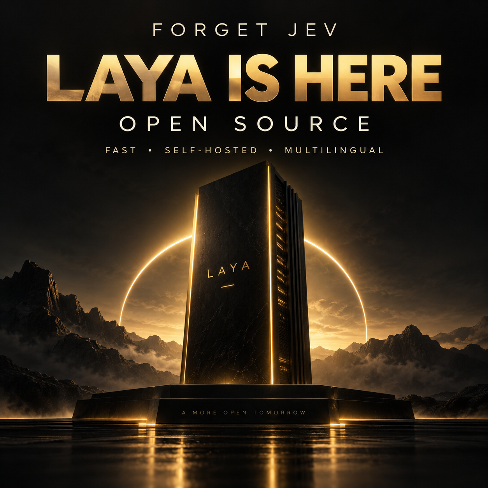

What was analyzed.
What was measured.
The course separates editorial material, authors’ claims, observed code, and a local test.
Provided material
Two overview and comparison texts Jev × Laya and three editorial images. The texts set the starting point; the claims were cross-checked against the repository and current cards.
The video was downloaded and fully transcribed with inemavox and Whisper large-v3: about 26 minutes, 401 segments. The automatic transcription occasionally confuses Laya with Leia and ModernBERT with Modern Bird; the course uses code names.
Original video on YouTubeTechnical sources and provenance
- Upstream code at the analyzed commit: SDK, Router, sequence assembly, confidence, and presets.
- Author’s benchmark report: consult conditions and limitations; do not treat it as our measurement.
- Multilingual card and typed-decisions card: languages, scope, and calibration.
- Creator’s article: architecture and history; some promotional claims are stronger than the current evidence.
- AbdelStark/jev-benchmarks and nibzard/decision-model-benchmark: external Jev measurements using their own protocols.
- Official demo and PyPI package: usage references and distribution.
Corrections that guide the lessons
| Simplified claim | Adopted reading |
|---|---|
| It doesn’t generate text, so it can’t be wrong. | Structured output avoids free text, but it can still classify incorrectly and be overly confident. |
| Multilingual with 135M parameters. | The video cites an earlier description; the current card indicates 322M total, with mmBERT-base. |
| The Router always selects the specialist. | typed-decisions requires explicit indication or auto_task_detection enabled. |
| 95% confidence = 95% correct. | Choice uses normalized entropy in the confidence field; calibration requires data. |
| Laya defeats Jev universally. | Sources use different prompts, samples, and conditions; specialized training is not the same as zero-shot. |
| Fine-tuning on the benchmark proves leakage. | Training on the training split is legitimate; the issue is comparing capabilities without making explicit that preparation. Test leakage requires specific evidence. |
| Self-hosted has zero cost. | No charge from Laya per call, but there are hardware, energy, and operations costs. |
Observed local execution
Multilingual checkpoint, NVIDIA GB10 GPU, four questions per ticket, 16 balanced synthetic messages. Result: 13 correct (81.25%), majority baseline 25%, summed multiclass Brier 0.30835, and ECE top-probability in ten bins 0.17988. The sample is small and does not measure production reliability.
Errors preserved: buying 20 licenses → billing; time prediction → technical; message sent by mistake → technical. All results still require human review.
The first measured inference took 1,401 ms, even after model load; subsequent runs varied between about 22 and 124 ms in this trial. These are observations from a single run, with warming up and other tasks on the machine, not a controlled latency benchmark.
Inspect the full JSON reportMaterials and resources


Complete third-party files, video, and transcription are stored in the local research archive, outside the course’s Git. The lessons are authored and point to the original sources. The course did not run Jev or train a new checkpoint.